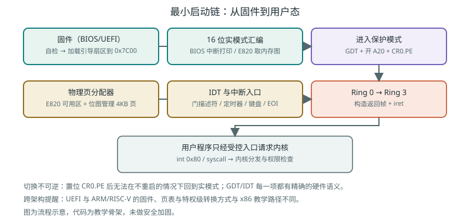

动手写一个小型 OS，最有价值的不是复刻一套完整 Linux，而是把启动链、CPU 模式、内存布局、中断入口和执行特权级连接成可运行的最小闭环。本章的 Bootloader、GDT、IDT、物理页分配器和用户态切换都依赖目标架构与启动环境，不能把 x86 BIOS 实模式流程直接推广到 UEFI 或 ARM/RISC-V 平台。
建议先固定 QEMU 机器类型、固件、交叉编译器与链接脚本，再逐步验证每个阶段的寄存器、内存映射和异常行为。代码是教学实验骨架，不是安全加固过的通用内核；进入 Ring 3 还需要正确配置段/页权限、TSS/栈切换与异常处理。
一、用QEMU从零启动
计算机按下电源键后，CPU首先运行BIOS（Basic Input/Output System）。BIOS执行硬件自检后，寻找可启动设备——如果找到了我们的虚拟磁盘，它会将磁盘的第一个扇区（512字节，称为引导扇区或Boot Sector）加载到内存地址 0x7C00，然后跳转过去执行。你的OS的第一个脚印就从这里开始。
1. 编写Bootloader
引导扇区用16位实模式汇编编写（x86刚启动时处于16位实模式）。我们用BIOS的 int 0x10 中断在屏幕上打印字符：
; boot.asm — 16位实模式引导程序
[org 0x7c00] ; 告诉汇编器代码将被加载到 0x7C00
[bits 16]
start:
; 设置段寄存器
xor ax, ax
mov ds, ax
mov es, ax
mov ss, ax
mov sp, 0x7c00
; 用 BIOS int 0x10 打印字符串
mov si, msg
print_loop:
lodsb ; 加载 SI 指向的字符到 AL，SI++
or al, al ; 检查是否为 0（字符串结束符）
jz hang
mov ah, 0x0e ; BIOS 的 TTY 输出功能
int 0x10
jmp print_loop
hang:
hlt
jmp hang
msg: db "Hello from my OS!", 0
; 填充到 510 字节，以 0x55AA 结尾（引导扇区标识）
times 510 - ($ - $$) db 0
dw 0xaa552. 编译并运行
# 编译汇编代码
$ nasm -f bin boot.asm -o boot.bin
# 创建虚拟磁盘镜像（1.44MB 软盘镜像）
$ dd if=/dev/zero of=disk.img bs=512 count=2880
$ dd if=boot.bin of=disk.img bs=512 count=1 conv=notrunc
# 用 QEMU 启动
$ qemu-system-x86_64 -drive format=raw,file=disk.img -m 256M
# 你应该能看到 QEMU 窗口中显示出 "Hello from my OS!"踩坑提醒：引导扇区必须恰好512字节，最后两个字节必须是 0x55 0xAA（小端序，所以代码中写 dw 0xaa55）。如果最后两个字节不对，BIOS会认为这个磁盘不可启动。另一个常见坑是 ORG 0x7C00 和段寄存器必须匹配——很多新手在实模式下的地址计算上栽跟头。

iret 构造返回帧切到 Ring 3。用户程序只能承受控入口（如 int 0x80）请求内核。图为 x86 教学路径示意。二、进入保护模式
实模式有很多限制：只能访问1MB内存、没有内存保护、只能使用16位寄存器和寻址。现代OS必须运行在32位或64位的保护模式（Protected Mode）或长模式（Long Mode）下。从实模式进入保护模式的步骤是固定的三步曲：设置GDT → 开启A20地址线 → 设置CR0保护模式位。
1. 设置GDT（全局描述符表）
保护模式下，内存段不再由段寄存器直接决定，而是通过GDT中的段描述符来定义。每个段描述符包含了段的基地址、长度和访问权限。最少需要两个描述符：代码段和数据段。段描述符的8字节结构如下：
| 字节偏移 | 7-4位 | 3位 | 2位 | 1位 | 0位 | 含义 |
|---|---|---|---|---|---|---|
| 5 (flags+limit_high) | G (粒度) | D/B (默认操作大小) | L (64位码) | AVL (软件可用) | 段长度[19:16] | |
| 4 (access) | P (段存在) | DPL (特权级) | S (系统/代码数据) | E/C/D (类型扩展) | W/R/A (读写/已访问) | |
| 2-3 | 基地址[23:16] / 基地址[31:24] | |||||
| 0-1 | 段长度[15:0] / 基地址[15:0] | |||||
看起来复杂，但实践中只需要套用固定模板——上面代码中的数值就是标准的平坦内存模型（Flat Memory Model）模板。
; GDT 定义（32位保护模式）
gdt_start:
; 第一个描述符必须是空描述符（GDT 规范要求）
dd 0x0
dd 0x0
; 代码段描述符
gdt_code:
; base=0x0, limit=0xfffff, 32位代码段, Ring 0
dw 0xffff ; limit low
dw 0x0 ; base low
db 0x0 ; base mid
db 10011010b ; access byte: present, Ring 0, code, executable, readable
db 11001111b ; flags+limit: 4K granularity, 32-bit
db 0x0 ; base high
; 数据段描述符
gdt_data:
; base=0x0, limit=0xfffff, 32位数据段, Ring 0
dw 0xffff ; limit low
dw 0x0 ; base low
db 0x0 ; base mid
db 10010010b ; access byte: present, Ring 0, data, writable
db 11001111b ; flags+limit
db 0x0 ; base high
gdt_end:
; GDT 描述符（给 lgdt 指令用）
gdt_descriptor:
dw gdt_end - gdt_start - 1 ; GDT 大小 - 1
dd gdt_start ; GDT 基地址
; 段选择子常量
CODE_SEG equ gdt_code - gdt_start
DATA_SEG equ gdt_data - gdt_start2. 开启A20地址线
A20地址线是历史遗留问题——早期的80286 CPU有24条地址线，但为了兼容8086的20位地址线回绕特性，A20地址线默认被屏蔽。进入保护模式前必须开启它，否则无法访问1MB以上的内存。最常见的开启方式是通过键盘控制器（8042）的端口：
; 开启 A20 地址线（通过键盘控制器端口）
enable_a20:
call wait_kbc ; 等待键盘控制器空闲
mov al, 0xd1 ; 发送写输出端口命令
out 0x64, al
call wait_kbc
mov al, 0xdf ; 设置 A20 使能位
out 0x60, al
call wait_kbc
ret3. 切换保护模式
; 加载 GDT
lgdt [gdt_descriptor]
; 设置 CR0 寄存器的保护模式位（PE 位）
mov eax, cr0
or eax, 0x1 ; 设置 PE (Protection Enable) 位
mov cr0, eax
; 远跳转刷新流水线，加载代码段选择子
jmp CODE_SEG:protected_mode
[bits 32]
protected_mode:
; 设置数据段寄存器
mov ax, DATA_SEG
mov ds, ax
mov es, ax
mov ss, ax
mov esp, 0x90000
; 现在我们在32位保护模式下！
; 可以寻址4GB内存，有硬件内存保护关键认知：保护模式的切换是不可逆的——一旦设置了CR0的PE位，你无法在不重启的情况下回到实模式。GDT中的每个bit都有精确的硬件语义：access byte的每个位决定段的访问权限，granularity位决定limit的单位是字节还是4KB。一个bit写错，CPU就会产生#GP异常。我当年调试GDT时，就是因为代码段描述符的 db 11001111b 写成了 11001110b（没设置32位位标志），CPU把32位代码当16位解码，结果每条指令都少读了两个字节，蹦出来的字符完全不可理喻。
三、实现物理内存分配器
进入保护模式后，我们需要知道系统有多少物理内存可用，然后实现一个简单的分配器来管理它。早期的内核通过BIOS的 int 0x15, E820h 功能调用获取物理内存布局。
1. 用E820获取内存布局
在进入保护模式之前（实模式下），调用BIOS中断获取系统内存映射：
; E820 调用流程示意（不是完整的 BIOS 兼容实现）
; 在实模式下为每次调用设置 EAX/EDX/ECX，并保留 EBX continuation token
detect_memory:
xor ebx, ebx
mov di, 0x8000
mov dword [mmap_entries], 0
.loop:
mov eax, 0xe820
mov edx, 0x534D4150 ; 'SMAP'
mov ecx, 24 ; 请求 24-byte entry
int 0x15
jc .done ; CF 表示 BIOS 调用失败/无更多条目
cmp eax, 0x534D4150 ; 校验返回签名
jne .error
cmp ecx, 20 ; 至少需要 20-byte 基本字段
jb .error
inc dword [mmap_entries]
add di, 24 ; 实际代码还需按 BIOS 返回长度处理 20/24-byte entry
test ebx, ebx ; EBX=0 表示枚举完成
jnz .loop
.done:
ret
.error:
; 真实 bootloader 应报告错误并停止使用不完整内存图，
; 不应把“只剩低端 1MB”当作通用安全回退策略。
stc
retE820返回的每个条目包含：起始地址（8字节）、长度（8字节）、类型（4字节）。类型1表示可用内存，类型2表示保留区域，类型3表示ACPI回收内存，类型4表示ACPI NVS内存。我们只使用类型1的可用内存区域。 真实实现还必须检查返回的条目长度、24-byte 扩展属性有效位（若提供）、地址范围溢出和条目数量上限；仅凭 Type=1 就直接加入空闲页分配器是不安全的。应保留内核、引导数据、MMIO、固件保留区和低端内存等区域。
2. 位图分配器
最简单的物理页分配器是基于位图（bitmap）的。我们把物理内存分成4KB大小的页面（page），每个页面在位图中占1个bit：0表示空闲，1表示已分配。
// mem.c — 位图物理内存分配器
#define PAGE_SIZE 4096
#define MAX_PAGES (1024 * 1024) // 最多管理4GB内存
static uint8_t bitmap[MAX_PAGES / 8];
static uint32_t total_pages;
static uint32_t free_pages;
void mem_init(uint64_t mmap_addr, uint32_t entries) {
// 从 E820 结果计算总页面数
total_pages = 0;
for (int i = 0; i < entries; i++) {
mmap_entry_t *e = (mmap_entry_t *)(mmap_addr + i * 24);
if (e->type == 1) { // 可用内存
total_pages += e->length / PAGE_SIZE;
}
}
free_pages = total_pages;
// 将所有位初始化为0（空闲）
memset(bitmap, 0, sizeof(bitmap));
}
void *page_alloc(void) {
// 扫描 bitmap，找到第一个空闲页
for (uint32_t i = 0; i < total_pages; i++) {
if (!(bitmap[i / 8] & (1 << (i % 8)))) {
bitmap[i / 8] |= (1 << (i % 8));
free_pages--;
return (void *)(i * PAGE_SIZE);
}
}
return NULL; // 没有可用内存
}
void page_free(void *addr) {
uint32_t page = (uint32_t)addr / PAGE_SIZE;
bitmap[page / 8] &= ~(1 << (page % 8));
free_pages++;
}设计理念：位图分配器虽然简单，搜索效率是O(n)，但它的优点是实现直观且内存开销极低——管理4GB内存只需要128KB的位图（4GB/4KB/8）。更高级的分配器（如buddy system或slab分配器）会在位图的基础上优化碎片和分配速度。对于我们自己写的小OS，位图分配器够用就好。
四、设置中断
没有中断的操作系统就像没有耳朵的人——无法感知外部世界的任何事件。键盘敲击、定时器滴答、磁盘完成I/O——这些都需要中断来通知CPU。在保护模式下，中断由IDT（Interrupt Descriptor Table）管理。
1. 编写IDT
IDT的每个条目（门描述符）大小为8字节，可以配置为中断门、陷阱门或任务门。中断门会自动清除IF位（禁止嵌套中断），陷阱门不会。大多数设备中断使用中断门。
// idt.c — 中断描述符表设置
struct idt_entry {
uint16_t base_low; // 中断处理函数低16位
uint16_t sel; // 代码段选择子
uint8_t always0; // 必须为0
uint8_t flags; // 类型和属性
uint16_t base_high; // 中断处理函数高16位
} __attribute__((packed));
struct idt_ptr {
uint16_t limit;
uint32_t base;
} __attribute__((packed));
struct idt_entry idt[256];
struct idt_ptr idtp;
void idt_set_gate(uint8_t num, uint32_t handler, uint16_t sel, uint8_t flags) {
idt[num].base_low = handler & 0xFFFF;
idt[num].base_high = (handler >> 16) & 0xFFFF;
idt[num].sel = sel;
idt[num].always0 = 0;
idt[num].flags = flags; // 如 0x8E 表示 Ring 0 中断门
}
void idt_install(void) {
idtp.limit = sizeof(idt) - 1;
idtp.base = (uint32_t)&idt;
memset(&idt, 0, sizeof(idt));
// 设置每个中断的处理函数
idt_set_gate(0, (uint32_t)isr0, 0x08, 0x8E);
idt_set_gate(1, (uint32_t)isr1, 0x08, 0x8E);
// ... 一共设置256个
idt_set_gate(32, (uint32_t)irq0, 0x08, 0x8E); // 定时器
idt_set_gate(33, (uint32_t)irq1, 0x08, 0x8E); // 键盘
// 加载 IDT
__asm__ __volatile__("lidt %0" : : "m"(idtp));
// 启用中断
__asm__ __volatile__("sti");
}2. 键盘中断处理
键盘中断是IRQ1（中断向量33）。当按键按下时，键盘控制器向CPU发送中断，CPU读取键盘端口 0x60 获得扫描码：
// 键盘中断处理函数
void keyboard_handler(void) {
uint8_t scancode = inb(0x60); // 从键盘端口读取扫描码
if (scancode & 0x80) {
// 按键释放（bit7=1），可以忽略
} else {
// 按键按下，在这里可以将扫描码转换为 ASCII
char c = scancode_to_ascii(scancode);
terminal_write(&c, 1);
}
// 发送 EOI（End of Interrupt）到 PIC
outb(0x20, 0x20);
}常见错误：中断处理函数执行时间必须尽可能短，因为CPU在中断处理期间会阻塞其他中断。如果需要做复杂处理，应该只做最必要的操作（如把扫描码存入缓冲区），然后触发软中断让下半部分（bottom half）去处理。另一个容易忽略的点：PIC（可编程中断控制器）需要在中断处理结束时发送EOI，否则不会接收后续中断——这会导致键盘只响应一次就彻底"哑"了。
五、跳到用户态
最后也是最激动人心的一步——从Ring 0（内核态）切换到Ring 3（用户态）。这标志着你的小OS具备了真正的多权限级保护能力。用户态的代码不能直接执行特权指令、不能访问内核内存，所有硬件操作必须通过系统调用。
1. 准备用户态环境
切换到Ring 3需要使用 iret 指令（中断返回），因为Intel的CPU架构中，唯一从高特权级到低特权级的合法路径就是中断返回。我们通过构造一个"伪造"的中断返回帧来实现切换：
// 切换到用户态（Ring 3）
void switch_to_user(void) {
// 设置用户态代码段选择子（Ring 3）
// 假设 GDT 中索引3是用户态代码段，索引4是用户态数据段
#define USER_CS 0x18 | 0x3 // 索引3 + Ring 3
#define USER_DS 0x20 | 0x3 // 索引4 + Ring 3
// 构造中断返回帧，模拟一个从 Ring 3 到 Ring 0 调用后返回
struct {
uint32_t ss; // 用户态栈段
uint32_t esp; // 用户态栈指针
uint32_t eflags; // 标志寄存器
uint32_t cs; // 用户态代码段
uint32_t eip; // 用户态入口点
} __attribute__((packed)) frame;
frame.ss = USER_DS;
frame.esp = 0xBFFFF0; // 用户栈地址
frame.eflags = 0x202; // IF=1 (启用中断), IOPL=0
frame.cs = USER_CS;
frame.eip = (uint32_t)user_process; // 用户进程入口
// 用 iret 指令切换到 Ring 3
__asm__ __volatile__(
"mov %0, %%eax\n"
"pushl (%%eax)\n" // ss
"pushl 4(%%eax)\n" // esp
"pushl 8(%%eax)\n" // eflags
"pushl 12(%%eax)\n" // cs
"pushl 16(%%eax)\n" // eip
"iret\n"
:: "r"(&frame)
);
// 控制流不会回到这里
}2. 系统调用实现
用户进程无法直接调用中断或访问硬件。我们实现一个简单的 sys_write 系统调用——用户进程通过 int 0x80 软中断请求内核服务：
// 用户进程代码（在 Ring 3 执行）
void user_process(void) {
// 用 int 0x80 调用 sys_write 系统调用
// eax = 系统调用号 (1 = sys_write)
// ebx = 文件描述符 (1 = stdout)
// ecx = 字符串地址
// edx = 字符串长度
__asm__ __volatile__(
"mov $1, %%eax\n" // sys_write
"mov $1, %%ebx\n" // fd = stdout
"mov $msg, %%ecx\n" // buf
"mov $14, %%edx\n" // count
"int $0x80\n"
"1: jmp 1b\n" // 无限循环
:::
);
// 消息数据
__asm__ __volatile__(".section .rodata\n"
"msg: .ascii \"Hello from Ring 3!\\n\"\n"
".text\n");
}
// 内核中的系统调用分发器
void syscall_handler(struct regs_t *r) {
switch (r->eax) {
case 1: // sys_write
// r->ebx = fd, r->ecx = buf, r->edx = count
terminal_write((char *)r->ecx, r->edx);
break;
case 2: // sys_exit
// 终止当前进程
switch_to_idle();
break;
default:
break;
}
}核心洞见：从 Ring 0 到 Ring 3 的切换是操作系统安全模型的基石。用户进程无法直接执行 cli、hlt 等特权指令，无法访问内核地址空间，所有硬件操作必须经过系统调用——而系统调用的入口由内核完全控制。这个看似简单的权限分离，正是现代操作系统"用户程序崩溃不影响整个系统"的根本原因。
机制追踪：一次 iret，从 Ring 0 到 Ring 3 内核必须准备好什么？
切换到用户态不是执行一条指令那么简单，而是让 CPU 在不触发异常的情况下接受一套更低的权限。按顺序看：
- GDT 里有 Ring 3 描述符：用户态需要独立的代码/数据段（DPL=3），否则加载用户选择子就会触发 #GP。
- 段与页权限允许目标地址：用户代码所在页必须是用户可访问的（U/S 位），内核页应设 NX/不可写或完全对用户不可见。
- 准备可用的用户栈：用户态要有一个映射在用户空间的栈；iret 会从返回帧弹出 ss/esp，若指向内核地址空间则出错。
- 构造返回帧并 iret：栈上依次压入 ss、esp、eflags、cs、eip；iret 弹出这些字段并切换到指定特权级，这是从高特权级到低特权级的合法路径。
- 建立受控回入口：用户程序不能直接访问硬件，必须用
int 0x80/syscall回到内核；内核在入口做权限与参数检查，再把 eax 作为返回值交给用户。
为什么“用户态代码不能访问内核”需要页表而不只是段？
分段能限制基址与限长，但现代 x86-64 长模式下分段基本被绕过，权限主要由页表的 U/S 位决定。如果内核页被映射为用户可访问，Ring 3 代码仍可能读写它；因此“特权级隔离”必须与页表权限、NX 位以及正确的栈切换一起使用，单靠段寄存器不足以保证隔离。
写完这五个步骤，你的微型OS就具备了真实OS最核心的骨架：从BIOS引导、到保护模式、到物理内存管理、到中断处理、最后到用户态进程。虽然它没有文件系统、没有网络栈、没有进程调度（目前只有一个进程），但它已经完成了一个操作系统最本质的使命——管理和保护硬件资源，为应用程序提供执行环境。
如果你想继续扩展它，接下来可以做的事情包括：实现一个简易的FAT文件系统读取器、添加多任务调度器让多个用户进程轮流运行、或者扩展系统调用接口。每一件都是对前面章节所学知识的实践落地。
只读核对：工具链与引导扇区产物
环境：任意 Linux/macOS 主机；只检查工具版本与已有产物，不编译、不运行 QEMU。命令可用性与机器类型随发行版和 QEMU 版本变化。
# 确认交叉/汇编工具链是否存在
for t in nasm gcc ld objdump readelf qemu-system-x86_64; do
printf '%-22s' "$t"; command -v "$t" >/dev/null && "$t" --version 2>/dev/null | head -n1 || echo '未安装'
done
# 若已有 boot.bin（512 字节引导扇区），核对长度与结尾标识
if [ -f boot.bin ]; then
wc -c boot.bin
od -An -tx1 -j 510 -N 2 boot.bin # 应为 55 aa
objdump -D -b binary -m i8086 boot.bin | head -n 20
else
echo '当前目录没有 boot.bin，先用 nasm 编译一个再回来核对'
fi预期：nasm、objdump、qemu-system-x86_64 等能打印版本；存在 boot.bin 时 wc -c 为 512，最后两字节为 55 aa，objdump 以 i8086 反汇编能看出实模式指令。
解释：引导扇区必须是 512 字节且以 0x55AA 结尾，否则固件会判定不可启动；objdump -b binary 读原始二进制时需指定架构。这些核对只能证明产物格式，不能证明它能在真实固件上启动——那需要在 QEMU 中实际运行观察。清理：均为只读命令，不产生新文件。
下一章我们将从"动手写"的视角重新拉回宏观，看看现代操作系统的前沿趋势——从eBPF到安全架构、从Rust for Linux到Unikernel和Zircon微内核，今天的OS设计正在发生哪些深刻的变革。